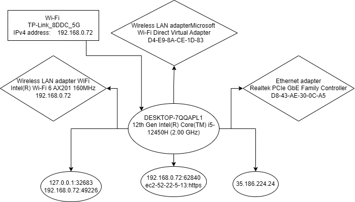

Daroczi Eduard
specificatii tehnice ale statiei principale de lucru
| Denumire componente |
Producator |
Parametri |
| Disk Drive WD PC SN560 SDDPNQE-1T00-1032 |
Microsoft |
Driver Version: 10.0.26100.7019 |
| Processor 12th Gen Intel(R) Core(TM) i5-12450H |
Microsoft |
GPU Memory 8GB |
| Memorie RAM 24GB |
LENOVO |
DDR5 4800Mhz |
| Sistem de operare Windows 11 Pro |
Microsoft |
64bit |
| Firmware: MS-16R8 SBIOS Ver.10D
|
Micro-Star International Co., Ltd. |
Versiune Firmware 10E |
retea personala

Caracteristicile conexiunii la retea
- MAC adress: D8:43:AE:30:0C:A5
- IP adress: 193.226.6.227
- Download speed: 71.32Mbps
- Upload speed: 80.54Mbps
Monitorizarea resurselor